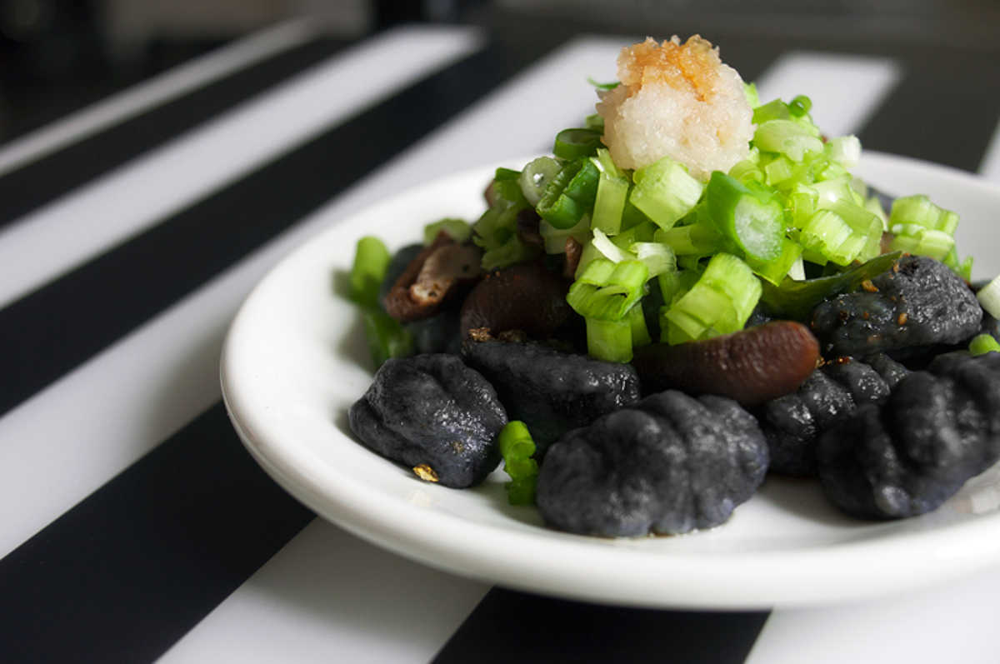
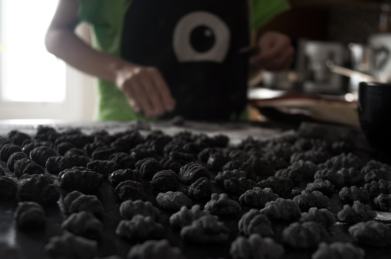

potato gnocchi
6 servings — 60 minutes
A few weeks ago, I asked people what they wanted to see me cook. Some asked for gnocchi, so here they are! Made from scratch, beautiful and black (just because). Topped with a light and sweet sauce, fresh scallions and daikon!
As it turns out, making gnocchi is long. It's well worth the effort, but if you're planning on making some, clear your afternoon!
Every step takes time. You have to wait for the potatoes to bake, wait for them to cool, you need to remove the skins etc. Skipping any of those steps will result in a gnocchi disaster.
These turned out perfect! This is a large recipe, so if you're only two you'll have plenty left-over that you can let dry, freeze and eat later.

Because the sauce and toppings are light and simple, you can focus on the texture of the gnocchi.
 russet potatoes 2 1/2
russet potatoes 2 1/2 whole wheat flour 1 1/4 cup
whole wheat flour 1 1/4 cup bamboo charcoal powder 1 tbsp
bamboo charcoal powder 1 tbsp sea salt 1/4 tsp
sea salt 1/4 tsp
gnocchi
- Preheat oven to 400F.
- Bake potatoes until fork tender. Peel skins off and mash them up with a fork or food processor. Let cool completely (you can also boil them until fork tender).
- Sift 1 1/4 cup of whole wheat flour, 1 tbsp bamboo charcoal powder and 1 pinch of salt together in a bowl.
- Mix the potatoes in gradually, and knead until you get a consistent dough.
- Sprinkle flour on your working surface, and divide your ball of dough into 4. Roll each section into a long rope with an approximate 2cm diameter.
- Proceed to cutting up the ropes into 2cm sections.
- To make the little lines over the gnocchis (optional, but fun), take each piece and make a ball with it. Press it up against the backside of a fork and slide it down all the way to the ends with your finger. Your ball will be left with sets of lines on top and will take its signature elongated shape.
- Cook gnocchi in a pot of boiling water with salt, the bits that are ready will float back to the surface.
 soy sauce 6 tbsp
soy sauce 6 tbsp mirin 3 tbsp
mirin 3 tbsp granulated sugar 4 tsp
granulated sugar 4 tsp
sauce
 shiitake 1/2 cup
shiitake 1/2 cup scallions 5 branches
scallions 5 branches daikon 1/3 cup
daikon 1/3 cup wakame 3 tbsp
wakame 3 tbsp shichimi togarashi To taste
shichimi togarashi To taste
toppings
- Rehydrate 3 tbsp of wakame as well in a separate cup. Let stand for 5 minutes, drain, rinse and cut into smaller pieces.
- Chop up 5 branches of scallions and grate 1/3 cup worth of daikon. Squeeze water out of daikon, and set aside.
- When gnocchi are cooked, sauté in a pan with the sauce and shiitake for 4-5 minutes.
- Serve gnocchi in two separate bowls, and top first with wakame, then scallions, followed by a dollop of grated daikon. Sprinkle some shichimi togarashi on top!